Keynote: Advancing the Platform
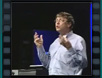
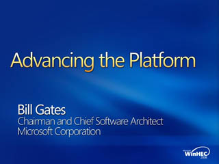
Speaker(s): Bill Gates
Keynote: The Platform for PC Innovation
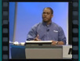
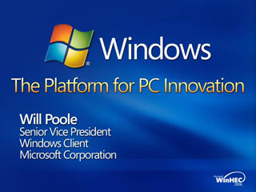
Speaker(s): Will Poole
Keynote: Winning with Windows Server
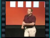
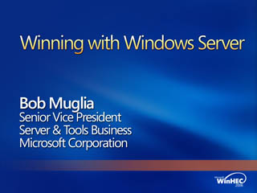
Speaker(s): Bob Muglia
Windows Vista Performance Technologies
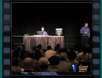
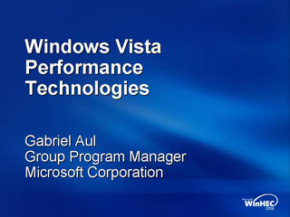
Speaker(s): Gabriel Aul
Windows Vista System Requirements and WinSAT
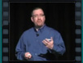
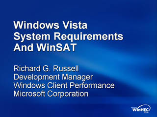
Speaker(s): Richard G. Russell
Power Management In Windows Vista
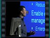
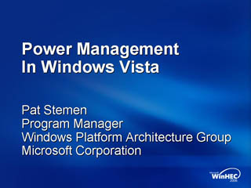
Speaker(s): Pat Stemen
Server Hardware Roadmap
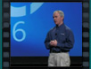
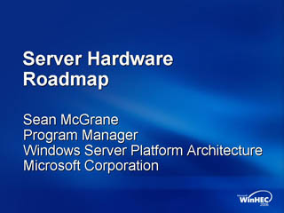
Speaker(s): Sean McGrane
Kernel Enhancements For Windows Server Longhorn
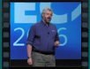
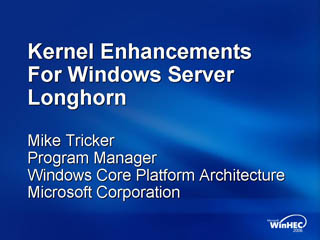
Speaker(s): Mike Tricker
Windows Server Virtualization Scenarios and Features
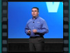
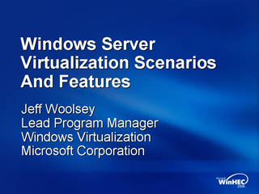
Speaker(s): Jeff Woolsey,Chris Corio
Windows Vista and Windows Server Longhorn Security Platform Enhancements
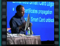
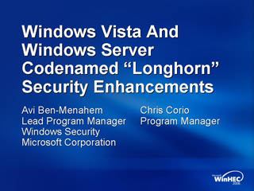
Speaker(s): Avi Ben-Menahem,Chris Corio
BitLocker Drive Encryption Hardware Enhanced Data Protection
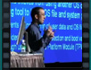
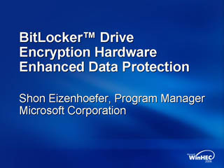
Speaker(s): Shon Eizenhoefer
Enterprise and Server Use of Microsoft BitLocker Drive Encryption
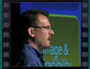
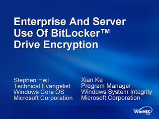
Speaker(s): Stephen Heil, Xian Ke
Hybrid Hard Disk and ReadyDrive Technology
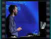
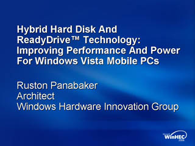
Speaker(s): Ruston Panabaker
Audio and Video Device Guidelines for the Microsoft Real-Time Communication Platforms
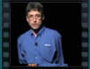
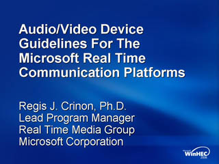
Speaker(s): Regis Crinon
HD DVD and Windows Vista: Futures and Opportunities
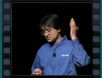
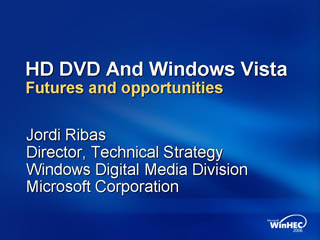
Speaker(s): Jordi Ribas
Windows Server Compute Cluster Server and Desk-side Clusters
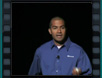
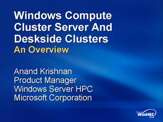
Speaker(s): Anand Krishnan